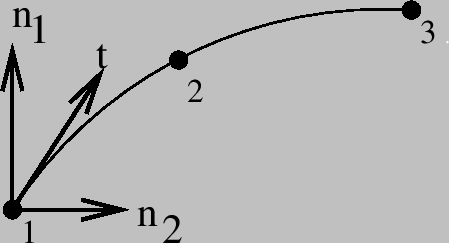
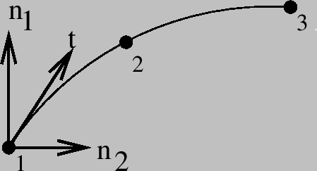
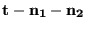
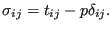
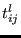

Keyword type: model definition
This option is used to define a gap geometry. The parameter ELSET is required and defines the set of gap elements to which the geometry definition applies. Right now, all gap elements must be of the GAPUNI type and can be defined by an *ELEMENT card. The gap geometry is defined by its clearance  and direction
and direction  (a vector of length 1). Let the displacement vector of the first node of a GAPUNI element be
(a vector of length 1). Let the displacement vector of the first node of a GAPUNI element be  and the displacement vector of the second node . Then, the gap condition is defined by:
and the displacement vector of the second node . Then, the gap condition is defined by:
|  | (474) |
The gap condition is internally simulated by a nonlinear spring of the type used in node-to-face contact with a linear pressure-overclosure curve, cf. Figure 132 in which the pressure is to be replaced by the force. The defaults for the spring stiffness (in units of force/displacement) and the tensile force at  are  and  , respectively. They can be changed by the user.
, respectively. They can be changed by the user.
First line:
Second line :
Example: *GAP,ELSET=E1 0.5,0.,1.,0.
defines a clearance of 0.5 and the global y-axis as gap direction for all gap elements contained in element set E1.
Example files: gap.